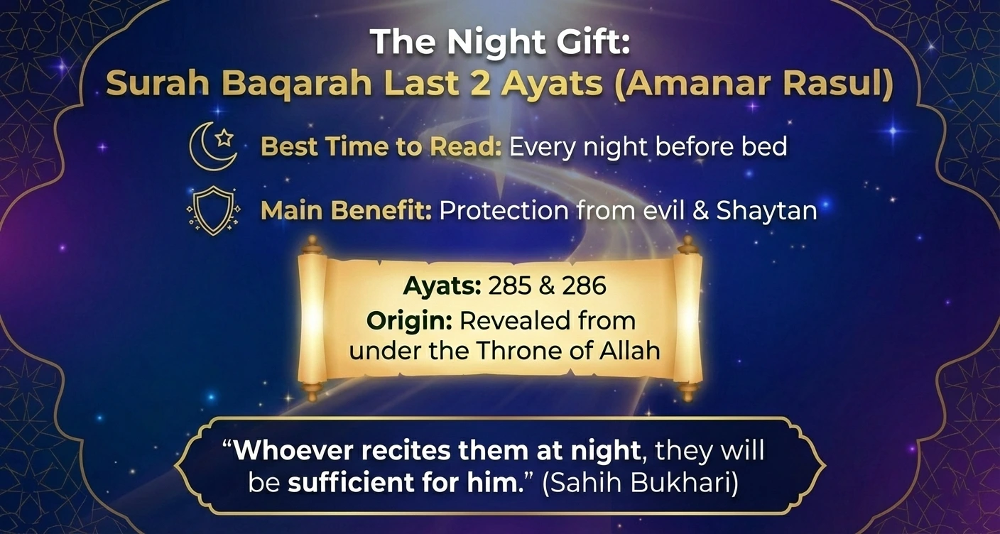
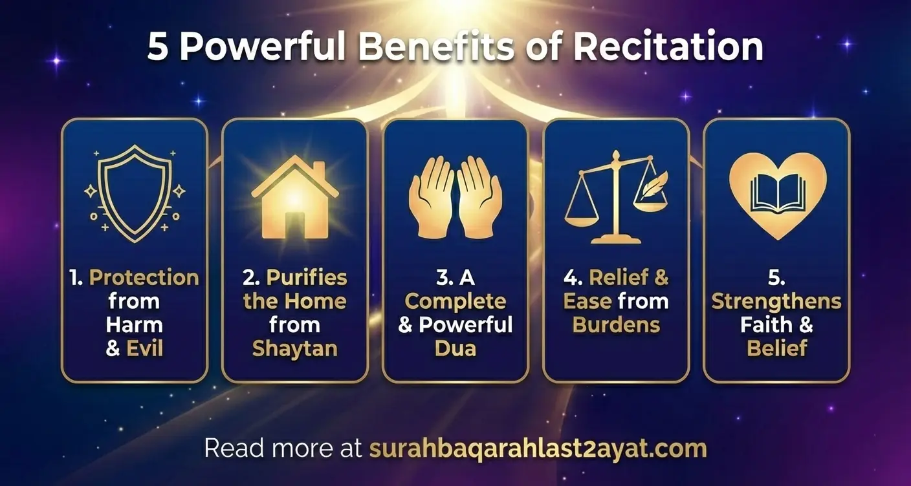

Surah Baqarah Last 2 Ayat - Introduction, Benefits, and Translation
Introduction
The last 2 ayats of Surah Baqarah are often called some of the most powerful verses in the entire Quran. In Arabic, they are known as Amanar Rasul (the first words of the verse).
Whether you want to protect your home from evil or find comfort during a hard day, these two verses (285 and 286) are a special gift for every Muslim.

| Features | Details |
|---|---|
| Primary Keyword | Surah Baqarah last 2 Ayats |
| Arabic Name | Amanar Rasul |
| Ayat No. | 285 & 286 |
| Best Time to Read | Every night before bed |
| Main Benefit | Protection from evil and Shaytan & more |
Surah Baqarah Last 2 Ayats in English
The Quran was revealed in Arabic, a language used by millions of people across the Middle East and Africa. However, the Arabic in the Quran is very special, deep, poetic, and sometimes one single word can have three or four different meanings!
Because of this "word-power," translating the Quran into English is a bit like trying to paint a 3D movie onto a flat piece of paper. You get the main idea, but you might miss some of the "hidden" beauty.
Ayat 285:
آمَنَ الرَّسُولُ بِمَا أُنْزِلَ إِلَيْهِ مِنْ رَبِّهِ وَالْمُؤْمِنُونَ ۚ كُلٌّ آمَنَ بِاللَّهِ وَمَلَائِكَتِهِ وَكُتُبِهِ وَرُسُلِهِ لَا نُفَرِّقُ بَيْنَ أَحَدٍ مِنْ رُسُلِهِ ۚ وَقَالُوا سَمِعْنَا وَأَطَعْنَا ۖ غُفْرَانَكَ رَبَّنَا وَإِلَيْكَ الْمَصِيرُ (2:285)
Transliteration:
Āmana-r-rasūlu bimā unzila ilayhi mir-rabbihi wal-mu’minūn. Kullun āmana billāhi wa malā’ikatihī wa kutubihī wa rusulih. Lā nufarriqu bayna ahadim-mir-rusulih. Wa qālū sami’nā wa ata’nā ghufrānaka rabbanā wa ilayka-l-maṣīr.
Translation:
The Messenger believes in what has been sent down to him from his Lord, and (so do) the believers. Each one believes in Allah, His Angels, His Books, and His Messengers. (They say,) "We make no distinction between one another of His Messengers, (and they say) We hear, and we obey. (We seek) Your forgiveness, our Lord, and to You is the return (of all)." Al-Quran(2:285)
Ayat 286:
لَا يُكَلِّفُ اللَّهُ نَفْسًا إِلَّا وُسْعَهَا ۚ لَهَا مَا كَسَبَتْ وَعَلَيْهَا مَا اكْتَسَبَتْ ۗ رَبَّنَا لَا تُؤَاخِذْنَا إِنْ نَسِينَا أَوْ أَخْطَأْنَا ۚ رَبَّنَا وَلَا تَحْمِلْ عَلَيْنَا إِصْرًا كَمَا حَمَلْتَهُ عَلَى الَّذِينَ مِنْ قَبْلِنَا ۚ رَبَّنَا وَلَا تُحَمِّلْنَا مَا لَا طَاقَةَ لَنَا بِهِ ۖ وَاعْفُ عَنَّا وَاغْفِرْ لَنَا وَارْحَمْنَا ۚ أَنْتَ مَوْلَانَا فَانْصُرْنَا عَلَى الْقَوْمِ الْكَافِرِينَ (2:286)
Transliteration:
Lā yukallifullāhu nafsan illā wus’ahā. Lahā mā kasabat wa ‘alayhā maktasabat. Rabbanā lā tu’ākhidhnā in-nasīnā aw akhta’nā. Rabbanā wa lā taḥmil ‘alaynā iṣran kamā ḥamaltahū ‘alal-ladhīna min qablinā. Rabbanā wa lā tuḥammilnā mā lā ṭāqata lanā bih. Wa’fu ‘annā wa-ghfir lanā wa-rḥamnā. Anta mawlānā fan-ṣurnā ‘alal-qawmi-l-kāfirīn.
Translation:
Allah burdens not a person beyond his scope. He gets reward for that (good) he has earned, and he is punished for that (evil) he has earned. "Our Lord! Punish us not if we forget or fall into error, our Lord! Lay not on us a burden like that which You did lay on those before us (Jews and Christians); our Lord! Put not on us a burden greater than we have strength to bear. Pardon us and grant us forgiveness. Have mercy on us. You are our Mawla (Patron, Supporter, and Protector) and give us victory over the disbelieving people." Al-Quran(2:286)
Revelation of the Surah Baqarah Last 2 Ayats

The revelation of the last two ayats of Surah Baqarah has a unique story, as the Muslims are told and fascinated about the significant moment known as the Night Journey(Isra' and Mi'raj). It was a miraculous event, the Prophet (ﷺ) was taken from Mecca to Jerusalem and ascended to the heavens. Throughout the whole journey, the Prophet (ﷺ) was given three gifts from Allah, those are:
- The five daily prayers, an obligation on the believer(at a certain age).
- The last two ayats of Surah Al-Baqarah.
- It was promised to him (ﷺ) that the sins of those who do not associate anything with Allah would be forgiven.
Unlike most of the Quran that was sent down at Muhammad (ﷺ) on Earth, the last two ayats of Surah Baqarah were revealed to Prophet Muhammad (ﷺ) from under the throne of Allah, from the divine treasure while traveling towards the Heavens. These two ayats were written by Allah on Loh-e-Mahfooz, 2000 years before he even created the Heavens and the Earth.
Surah Baqarah Last 2 Ayats Benefits
Aside from good deeds one gets on reciting the Al-Quran, Surah Baqarah's last 2 Ayats are recited for other purposes. The meaning of the ayats is also of a dua, there are several reported hadiths of Prophet Muhammad (ﷺ) encouraging the recitation of the last 2 ayats of Surah Baqarah for various purposes and situations.

Protection from Harm and Evil:
Reciting the last two verses of Surah Baqarah acts as a shield against harm, Shaytan (Satan), and other evil powers. The Prophet (ﷺ) said: "Shaytan does not enter a house in which Surah Al-Baqarah is recited." (Sahih Muslim, Hadith 780)
Sufficiency and Security:
The Prophet Muhammad ﷺ said: "Whoever recites the last two verses of Surah al-Baqarah at night, they will be sufficient for him" (Sahih Bukhari 5009). This means they protect you from harm all night long.
Forgiveness of Sins:
The last 2 ayats of Surah Baqarah are a source of divine forgiveness and mercy. The translation of the second ayat contains a beautiful dua for asking forgiveness from Allah.
The recitation of these ayats with sincerity is a means of asking for and obtaining Allah's forgiveness, especially for unintentional mistakes or sins that are overlooked.
Strengthening of Faith:
The most important and powerful aspect of reciting and pondering the Al-Quran is strengthening one's faith. The last 2 ayats affirm the believer's commitment to Allah, His messengers, and His divine revelation. These verses also reaffirm the Muslim faith in the unseen and guidance from Allah.
Relief from Hardship and Burdens:
The last two verses of Surah Baqarah are recited for comfort and relief from burdens. They are a prayer asking Allah for help and to not be tested beyond one's strength, reflecting a deep trust in His support.
To read more about the benefits, visit Surah Baqarah Benefits.
Conclusion
In short, the last 2 ayats of Surah Baqarah are like a gift box from Allah. They contain everything a believer needs:
- A Declaration of Faith (showing we believe in all the Prophets and Books).
- A Promise of Ease (reminding us that Allah knows our limits).
- A Perfect Prayer (asking for forgiveness and help).
Frequently Asked Questions
What are the main benefits of reciting Surah Baqarah's last 2 ayats at night?
The Prophet Muhammad ﷺ mentioned that reciting the last 2 ayats of Surah Baqarah before bed is "sufficient" for any believer. The main benefits include protection from evil, safety from Shaytan, and a reward similar to praying throughout the night.
Why is the verse "Amanar Rasul" considered so powerful?
Amanar Rasul (the first words of the last 2 ayats) is special because it was revealed directly to the Prophet ﷺ from the treasures of Heaven. It serves as a complete declaration of faith and a powerful Dua for forgiveness and ease.
Do the last 2 verses of Surah Baqarah protect against the Evil Eye?
Yes, many scholars mention that the last 2 verses of Surah Baqarah act as a spiritual shield. Reciting them consistently is a form of Ruqyah that provides protection against the Evil Eye, witchcraft, and harmful whispers.
Is it easy to memorize the last 2 ayats of Surah Baqarah?
Yes! Since there are only two ayats, most people find them very easy to memorize. Reading them along with the English translation and word-by-word meaning helps you learn them much faster.